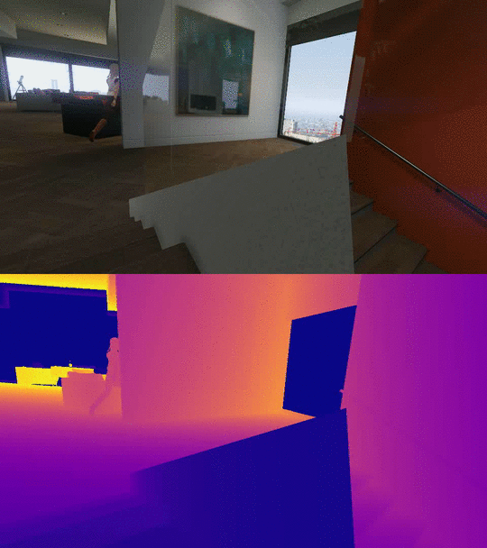
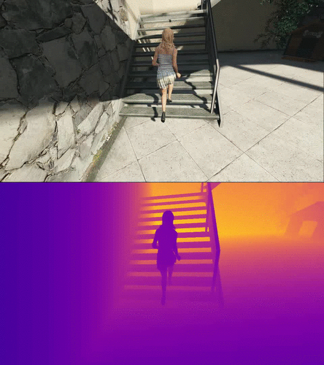
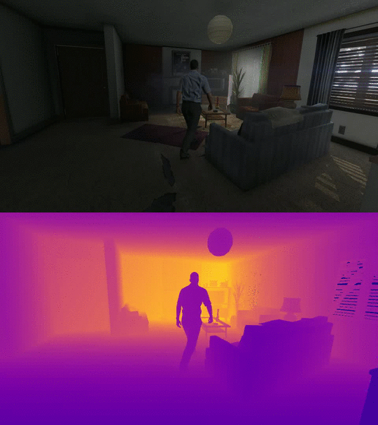
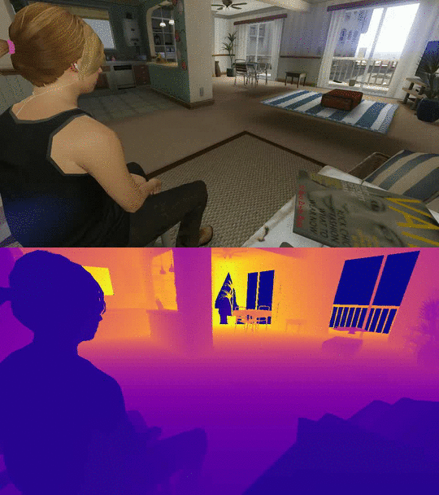
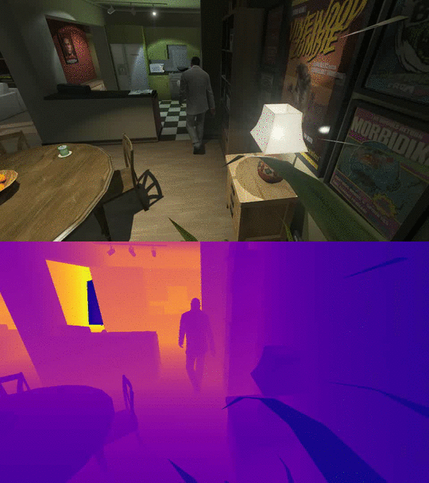
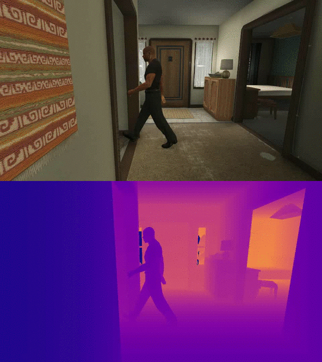
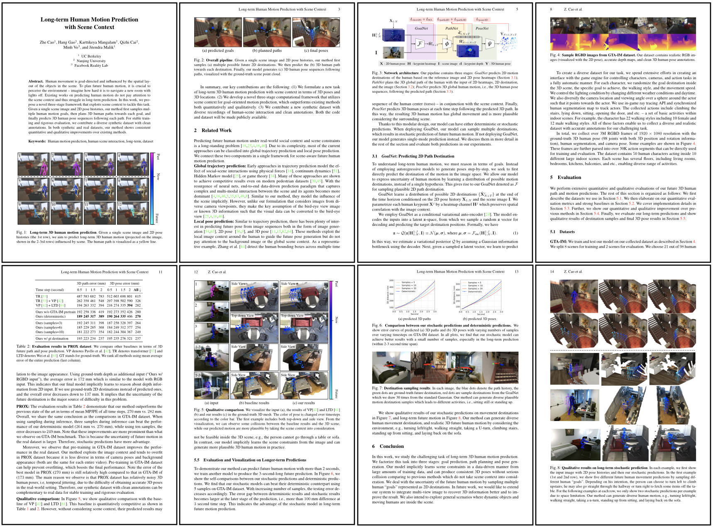

|
|
|
|
||
| Human movement is goal-directed and influenced by the spatial layout of the objects in the scene. To plan future human motion, it is crucial to perceive the environment -- imagine how hard it is to navigate a new room with lights off. Existing works on predicting human motion do not pay attention to the scene context and thus struggle in long-term prediction. In this work, we propose a novel three-stage framework that exploits scene context to tackle this task, as shown in the above image. Given a single scene image and 2D pose histories, our method first samples multiple human motion goals, then plans 3D human paths towards each goal, and finally predicts 3D human pose sequences following each path. For stable training and rigorous evaluation, we contribute a diverse synthetic dataset with clean annotations. In both synthetic and real datasets, our method shows consistent quantitative and qualitative improvements over existing methods. |
||
|
|
||
| (a) | (b) | (c) |
| Qualitative results of our method. (a) input: short-term 2D human pose sequence and a single RGB image, (b-c): future human motion predictions with consideration of the scene context. We visualize 3D human poses in ground-truth point cloud and change the color gradually from purple to dark blue, and eventually light blue across time steps. The top two rows show our three-second-long prediction results in GTA-IM dataset and the bottom two rows show our two-second-long prediction results in PROX dataset. To best visualize the 3D poses, we may rotate the camera viewpoint slightly for visualizing the two predictions from the same input sequence. Our method can generate diverse human motion, e.g., turning left/right, walking straight, taking a u-turn, climbing stairs, standing up from sitting, and laying back on the sofa. | ||
|  |  |  |
|  |  |  |
[Sample #1] |
[Sample #2] |
[Sample #3] |
| We introduce the GTA Indoor Motion dataset (GTA-IM) that emphasizes human-scene interactions in the indoor environments. We collect HD RGB-D image seuqences of 3D human motion from realistic game engine. The dataset has clean 3D human pose and camera pose annoations, and large diversity in human appearances, camera views, and activities: 10 different large house models, 13 weathers, 50 human models, 22 walking styles, and various actions. |
||
| To download the dataset, please follow the instruction in our GitHub repo. |
||
|  | Cao, Gao, Mangalam, Cai, Vo, Malik. Long-term Human Motion Prediction with Scene Context ECCV 2020 (Oral). [Paper] [Bibtex] |
Acknowledgements |